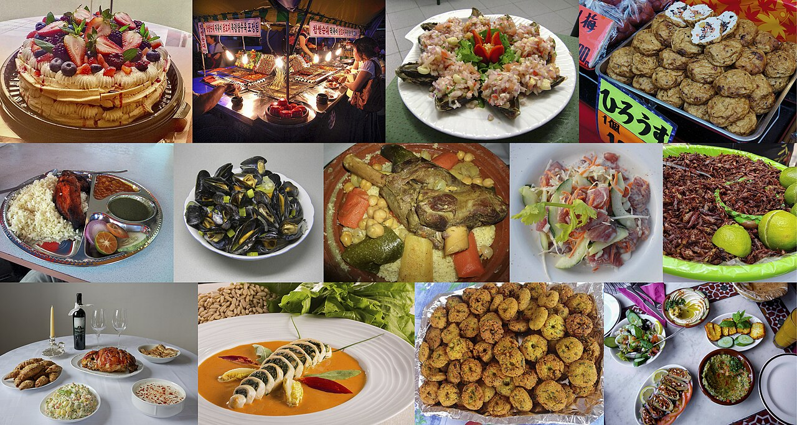
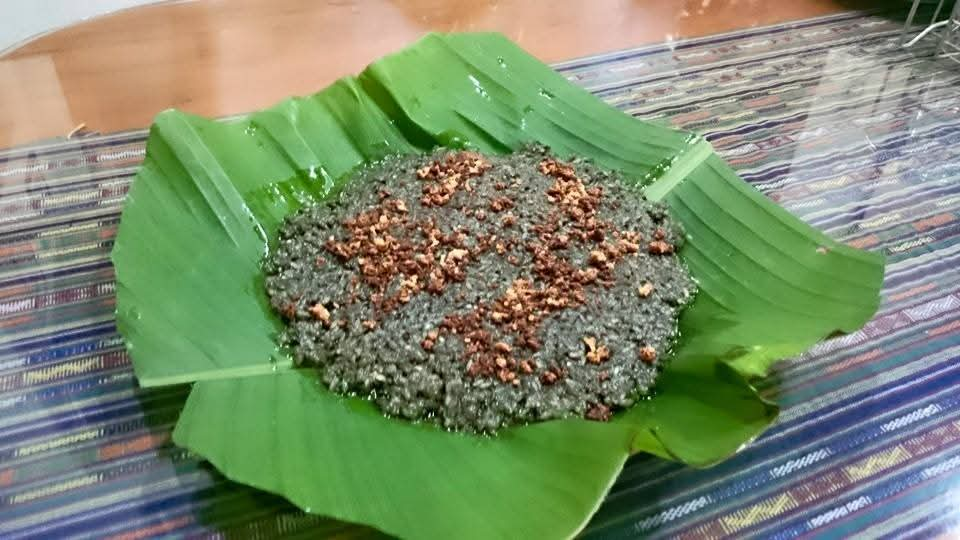
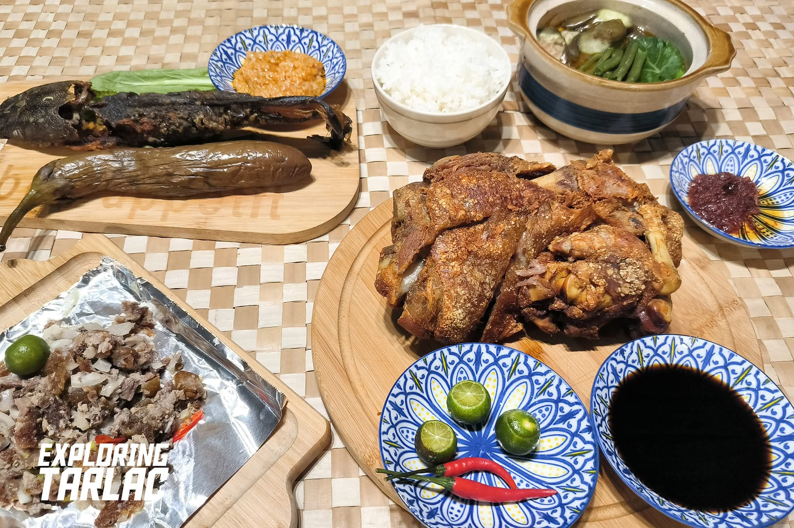
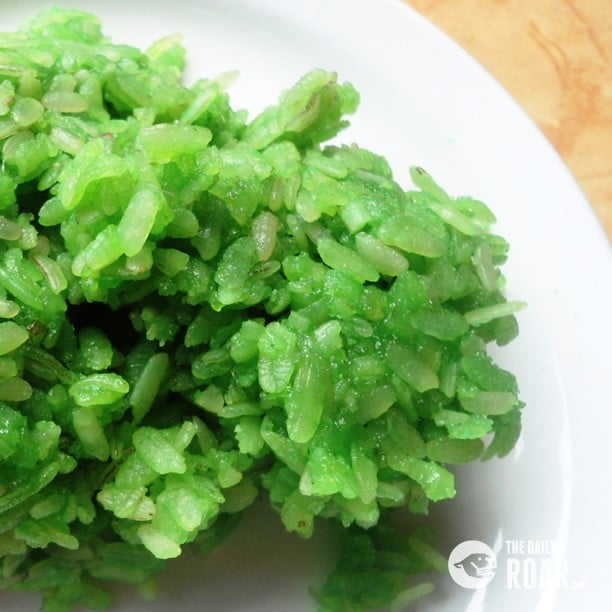
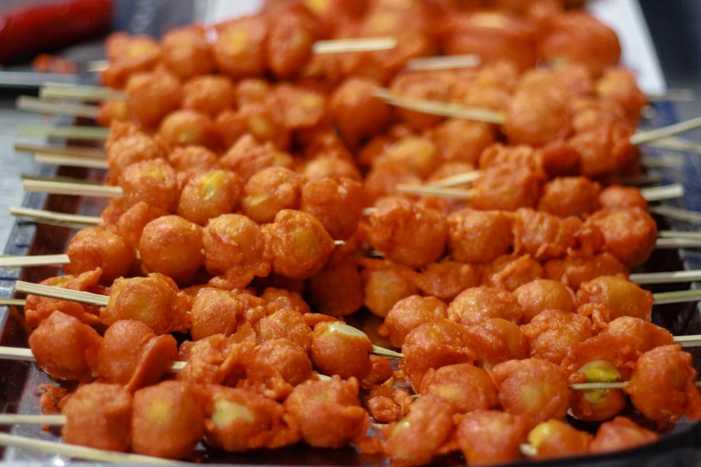
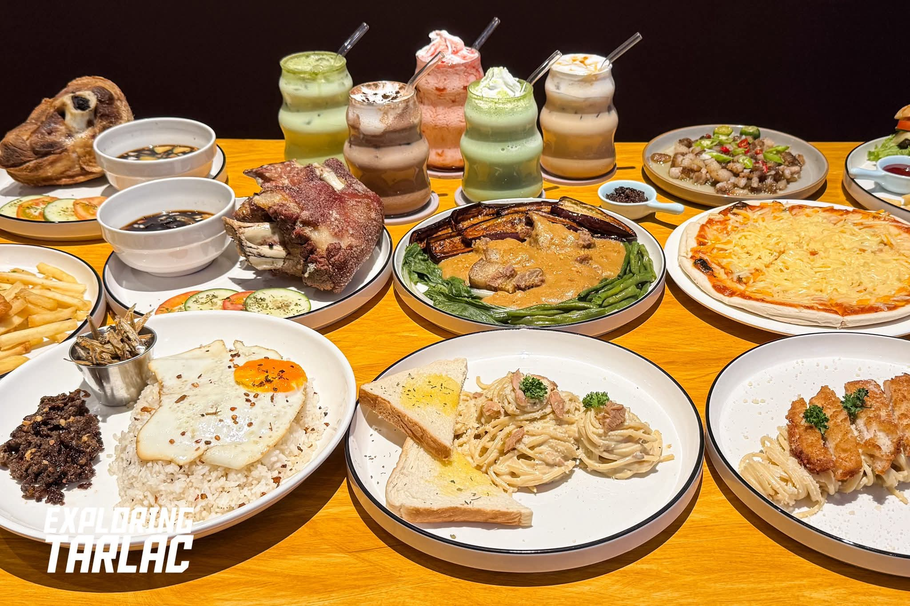

Tarlac Cuisine
Tarlac’s food scene is a rich tapestry woven from indigenous traditions, Kapampangan influences, and modern culinary creativity. The province’s fertile farmlands supply fresh produce, while its cultural ties bring bold flavors and time-honored cooking techniques. Whether you’re savoring a signature local dish, grabbing street food from a market stall, or enjoying a farm-to-table meal, Tarlac’s cuisine tells the story of its people and land.

Explore Our 6 Cuisine Categories
-

Local Tarlac Dishes -

Kapampangan-Inspired -

Filipino Comfort Food - Farm-to-Table Delights
-

Street Food & Merienda -

International & Fusion
What Makes Tarlac Cuisine Special?
- Fresh, Local Ingredients: Tarlac’s agricultural heartland produces rice, corn, vegetables, fruits, and livestock – many dishes use ingredients sourced straight from nearby farms, ensuring quality and supporting local communities.
- Cultural Fusion: The province sits at the crossroads of Ilocano, Tagalog, and Kapampangan cultures, creating a unique blend of flavors and cooking styles you won’t find anywhere else in the Philippines.
- Warm Hospitality: Food in Tarlac is always about bringing people together – whether it’s a humble home-cooked meal or a feast at a local restaurant, every dish is prepared with care and shared with joy.
Where to Experience Tarlac’s Food
- Local Eateries & Carinderias: Find authentic, affordable meals in small neighborhood spots – ask locals for their favorites to discover hidden gems!
- Farm Restaurants: Visit places like those in the Luisita estate or rural areas to enjoy meals made with just-harvested produce.
- Public Markets: Tarlac City Public Market and Capas Market are perfect for sampling street food, buying fresh ingredients, and experiencing local life.
- Specialty Restaurants: Several establishments across the province focus on traditional or creative Tarlac cuisine, offering a more curated dining experience.
Tips for Food Lovers Visiting Tarlac
- Try the Unexpected: Don’t be afraid to ask about dishes you’ve never heard of – many local specialties are kept off mainstream menus but are well worth trying.
- Visit During Festivals: Food plays a central role in Tarlac’s celebrations, like the Malatarlak Festival – you’ll get to sample unique dishes prepared for these special occasions.
- Learn to Cook Local: Some farms and restaurants offer cooking classes where you can master the art of making Tarlac’s signature dishes.
- Respect Local Customs: When eating in homes or traditional settings, follow local etiquette – for example, waiting for the host to invite you to start eating.